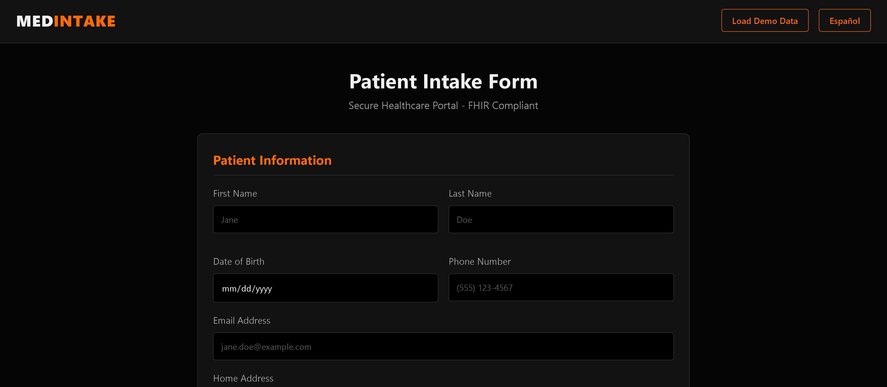

Bilingual Patient Intake (FHIR)
Admisión de Pacientes Bilingüe (FHIR)

The Problem
El Problema
Language barriers in intake lead to incomplete clinical histories and demographic errors, while manual data entry creates administrative burnout and data silos.
Las barreras lingüísticas en la admisión provocan historiales clínicos incompletos y errores demográficos, mientras que la entrada manual de datos crea agotamiento administrativo y silos de información.
The Solution
La Solución
A full‑stack system with real‑time English/Spanish toggling. The frontend captures Patient‑Generated Health Data (PGHD), which a FastAPI backend maps into HL7 FHIR R4 Patient and Observation resources for native EHR interoperability.
Un sistema full-stack con alternancia inglés/español en tiempo real. El frontend captura Datos de Salud Generados por Pacientes (PGHD), que un backend FastAPI mapea a recursos HL7 FHIR R4 de Paciente y Observación para interoperabilidad nativa con EHR.
Tech Stack
Tecnologías
Python (FastAPI), JavaScript (ES6+), Pydantic Models, HL7 FHIR R4, JSON Schema Validation
Workflow
Flujo de Trabajo
Patient → Bilingual Intake Form → FastAPI Validation → FHIR Mapping → JSON Output → EHR Integration
Paciente → Formulario Bilingüe → Validación FastAPI → Mapeo FHIR → Salida JSON → Integración EHR
Clinical Impact
Impacto Clínico
- Interoperability: Generates FHIR‑compliant JSON at the point of care
- Health Equity: Enables Spanish‑speaking patients to provide history in their primary language
- Workflow: Reduces clerical errors and re‑entry time
- Interoperabilidad: Genera JSON compatible con FHIR en el punto de atención
- Equidad en Salud: Permite a pacientes hispanohablantes proporcionar su historial en su idioma principal
- Flujo de Trabajo: Reduce errores administrativos y tiempo de reingreso de datos
Security & Privacy
Seguridad y Privacidad
Stateless architecture; no PHI stored.
Arquitectura sin estado; no se almacena PHI.
Representative File Structure
Estructura de Archivos Representativa
bilingual-patient-intake-fhir/ │── .gitignore │── LICENSE │── README.md │── index.html │ ├── backend/ │ ├── app.py # FastAPI logic & FHIR mapping# Lógica FastAPI y mapeo FHIR │ ├── requirements.txt │ └── __pycache__/ │ └── static/ ├── css/ └── js/ # i18n and frontend validation# i18n y validación frontend
What This Demonstrates
Lo que esto Demuestra
I can design patient‑facing tools, implement interoperability standards, and support clinical efficiency and health equity.
Puedo diseñar herramientas orientadas al paciente, implementar estándares de interoperabilidad y apoyar la eficiencia clínica y la equidad en salud.